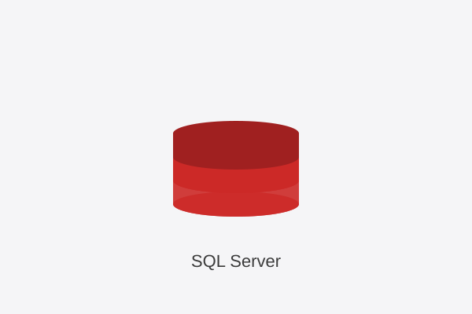
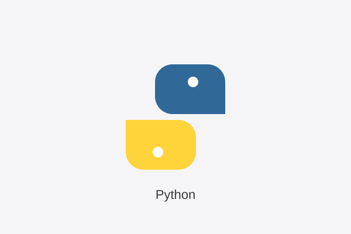
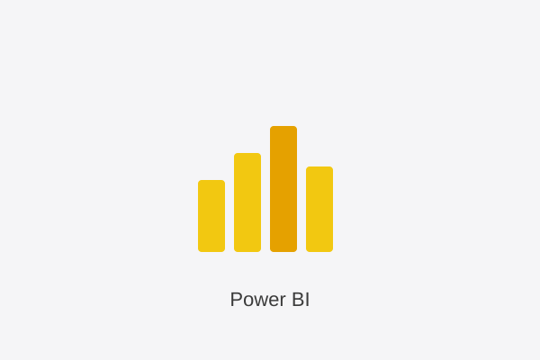

SQL & T-SQL
Database design, joins, aggregations, analytical queries in SQL Server.
See SQL projectRelational database design for a video games catalog. Built in SQL Server with normalized schema, primary and foreign keys, and analytical queries across multiple tables (Games, Developers, Genres, Platforms).
View SQL code on GitHubExploratory data analysis on the video games database using Python, Pandas and Seaborn. The notebook connects to SQL Server via SQLAlchemy, joins multiple tables, and produces clear visualizations of market trends.
View notebook on GitHubInteractive 5-page Power BI dashboard analyzing the video games catalog: home, catalog overview, developer analysis, pricing, and quality trends. Built with Power Query and DAX measures for full interactivity.
View project on GitHubA look at the 5 pages of the dashboard. Click any screenshot to view it in full size on GitHub.
Aspiring Data Analyst with hands-on experience in SQL, Python, and Power BI. I enjoy turning raw data into clear, actionable insights — from designing the database to delivering an interactive dashboard. All three projects on this page are built around the same dataset (VideoGamesDB), demonstrating the full data analytics workflow end-to-end.

Database design, joins, aggregations, analytical queries in SQL Server.
See SQL project
Data cleaning, transformation, and visualization with Pandas, NumPy, Matplotlib, Seaborn.
See Python project
Interactive dashboards, KPIs, DAX measures, Power Query data modeling.
See Power BI project